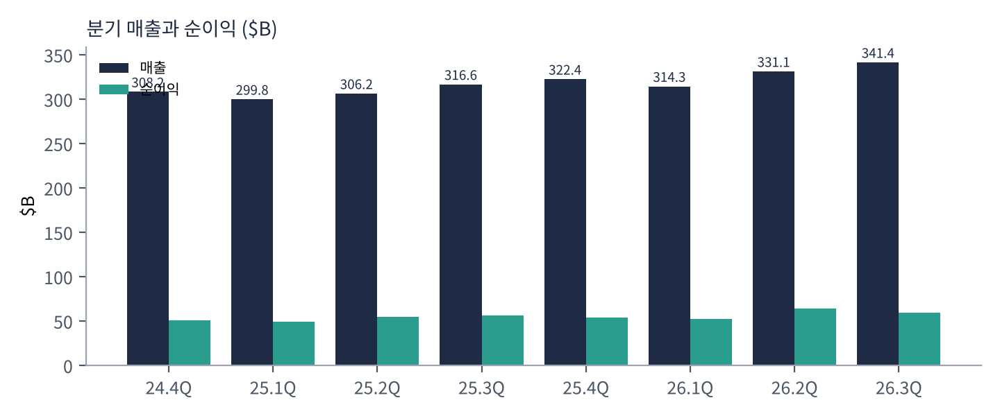
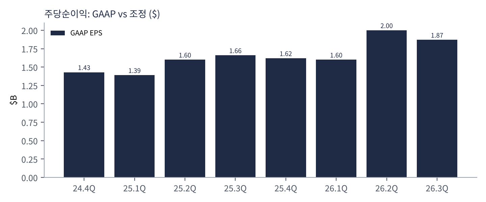
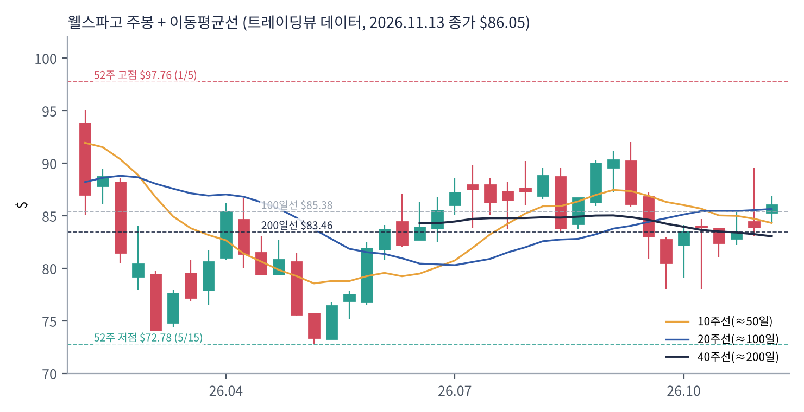
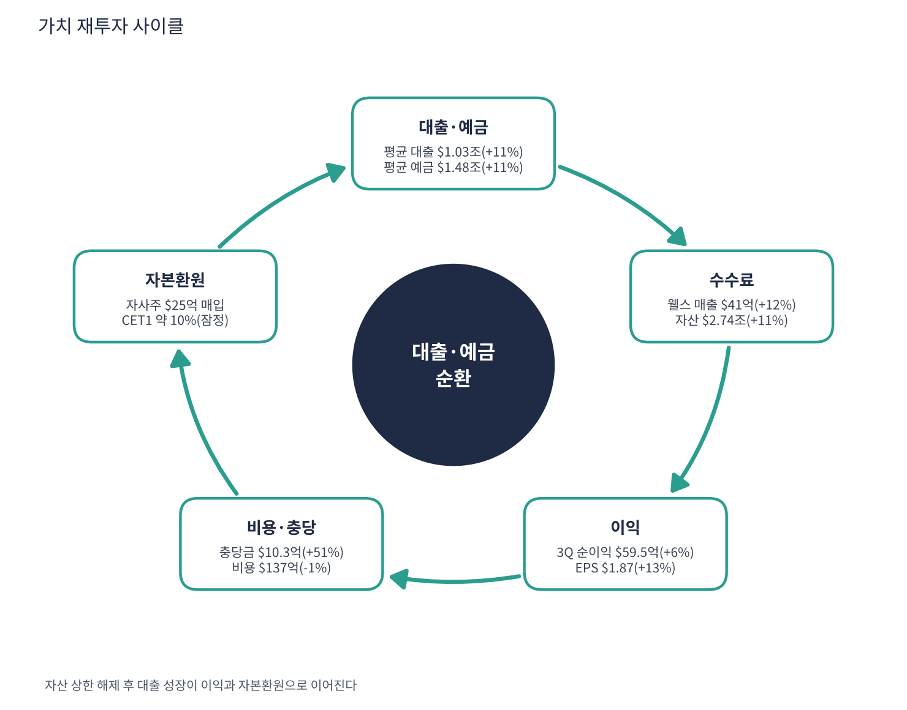

웰스파고(WFC)는 소비자 은행, 상업 은행, 기업·투자은행, 자산관리를 하는 미국 대형 은행이다. 이 표의 매출은 이자수익과 비이자수익을 합친 총수익(스캐너)이고, 3Q26 순수익(이자비용 차감)은 $218.7억(회사 발표)이다. 자산 상한이 2025년에 풀린 뒤 대출·예금이 11%씩 늘고 자사주를 사들이지만, 3Q에는 충당금이 51% 늘고 순이자마진이 줄어든 회사다.
| 항목 | 내용 |
|---|---|
| 종목 | Wells Fargo (WFC) · NYSE · 금융(은행) · 본사 미국 캘리포니아주 샌프란시스코 |
| 시가총액 | 약 $2,583억 · PER 12.1배(GAAP TTM) · P/S 2.98배 (11/13 종가 $86.05) |
| 최근 분기(3Q26) | 순수익 $218.7억(+2%), 순이익 $59.5억(+6%), EPS $1.87(+13%) |
| 이자·수수료 | 순이자이익 $125.2억(+5%), 비이자수익 $93.5억, 웰스 매출 $41.0억(+12%) |
| 대출·예금 | 평균 대출 $1.03조(+11%), 평균 예금 $1.48조(+11%) |
| 자본·환원 | 자사주 2,860만 주($25억) 매입, ROE 13.8%, CET1 약 10%(잠정, 전년 11%) |
| 다음 일정 | 4Q26 실적 2027.1.14 예정(트레이딩뷰) |
| 직책 | 인물 | 역할·특징 |
|---|---|---|
| 회장·CEO | 찰리 샤프 | '전방위 성장'을 강조 |
| CFO | 마이크 산토마시모 | 4Q 순이자이익 증가를 전망 |
경영 스타일: '비용을 통제하며 자산 상한 해제의 성장 여지를 쓴다'. 2025년 연준이 자산 상한을 해제한 뒤 대출·예금·카드·자동차 대출이 늘고 있다. 3Q에 신규 신용카드 계좌가 66만 개를 넘었고 자동차 대출 실행은 15% 늘었다. 비이자비용은 1% 줄었다.
카드와 자동차 대출 성장이 소비자 부문을 이끈다. 웰스 부문 고객 자산은 $2.74조(+11%)다.
대출 성장과 자사주 매입을 함께 하는 전략이다. 4Q에는 대출·예금 성장이 순이자이익을 키울 것이라고 CFO가 밝혔다(보도).
| 분기 | 총수익 | 순이익 | EPS | 조정 EPS | 특이 사항 |
|---|---|---|---|---|---|
| 2024.4Q | $308.2억 | $50.8억 | 1.43 | – | |
| 2025.1Q | $299.8억 | $48.9억 | 1.39 | – | |
| 2025.2Q | $306.2억 | $54.9억 | 1.60 | – | |
| 2025.3Q | $316.6억 | $55.9억 | 1.66 | – | |
| 2025.4Q | $322.4억 | $53.6억 | 1.62 | – | |
| 2026.1Q | $314.3억 | $52.5억 | 1.60 | – | |
| 2026.2Q | $331.1억 | $64.1억 | 2.00 | – | EPS 급등(원인 미확인) |
| 2026.3Q | $341.4억 | $59.5억 | 1.87 | – | 순이익 +6%, EPS +13%, 세금 혜택 $1.7억 포함 |
웰스파고는 조정 EPS를 따로 발표하지 않아 트레이딩뷰 Reported가 GAAP과 같다. 조정 EPS 열은 –로 둔다. 총수익은 스캐너의 이자수익+비이자수익 합계다.


흐름 요약: EPS는 $1.39~2.00으로 올랐고 2Q26이 최고다. 3Q26은 $1.87이며 이 중 이연 세금 혜택 $1.7억이 들어 있어 이를 빼면 약 $1.81(+9%)이다(보도). 1Q26에 철도차량 리스 사업을 매각해 다른 수익이 줄었다. 2Q26 EPS 급등의 원인은 확인하지 못했다. 영업이익과 분기 설비투자는 표에서 뺐다.
| 부문 | 3Q26 매출 | 증감 | 비고 |
|---|---|---|---|
| 기업·투자은행 | $50.1억 | +3% | 순이익 $19.2억(-2%) |
| 상업 은행 | $32.4억 | +6% | 순이익 $12.0억(+3%), 평균 예금 +16% |
| 웰스·투자 | $41.0억 | +12% | 순이익 $6.0억(+19%) |
| 순이자이익(전사) | $125.2억 | +5% | 대출·증권 잔액 증가 |
| 비이자수익(전사) | $93.5억 | -1% | 트레이딩 -21%, 주식 평가이익 대폭 감소 |
웰스가 가장 깔끔하게 성장했다. 소비자 부문 매출은 이 자료에서 구하지 못해 뺐다. 순이자마진(FTE)은 2.43%로 전년보다 낮아졌다는 보도가 있다.
웰스파고는 '성장 여력을 되찾은 은행'으로 방향을 잡았다.
| 축 | 최근 움직임 |
|---|---|
| 자산 상한 | 2025.6 해제, 이후 대출·예금 +11% |
| 자본환원 | 3Q 자사주 $25억 |
| 비용 | 비이자비용 -1% |
| 약점 | 충당금 +51%, 순이자마진 하락 |

| 이동평균 | 값 | 종가 대비 | 해석 |
|---|---|---|---|
| 5일선 | $85.77 | +0.3% | 현재가 근접 |
| 20일선 | $84.27 | +2.1% | 현재가가 위 |
| 50일선 | $84.21 | +2.2% | 현재가가 위 |
| 100일선 | $85.38 | +0.8% | 현재가 근접 |
| 200일선 | $83.46 | +3.1% | 현재가가 약 3% 위 |
주봉 흐름: 2025년 10월 저점 $77.6 → 2026년 1월 고점 $97.8 → 3월 $74.1 → 5월 저점 $72.8 → 9월 $90 → 10월 $78~84 → 11/13 주 $86.0. 이동평균선이 $83~86 구간에 모여 있다.
| 규칙 | 기준 | 현재 값 | 신호 |
|---|---|---|---|
| 장기 추세 필터 | 종가 vs 200일선 | $86.05 > $83.46 | 매수 |
| 중장기 교차 | 50일선 vs 200일선 | $84.21 > $83.46 | 매수 |
| 단기 교차 | 20일선 vs 50일선 | $84.27 > $84.21 | 매수 |
| 돈키언 채널 | 55일 고가 $91.99 / 저가 $78.00 | 중간값 $85.00 위 | 매수 |
| 1개월 모멘텀 | 21거래일 수익률 | +4.0% (기준 $82.75) | 매수 |
| 3개월 모멘텀 | 63거래일 수익률 | -1.7% (기준 $87.54) | 매도 |
| 6개월 모멘텀 | 126거래일 수익률 | +17.2% (기준 $73.42) | 매수 |
| 12개월 모멘텀 | 252거래일 수익률 | -0.2% (기준 $86.26) | 매도 |
| 종합 (8개 평균) | +0.50 | 매수 우위 |
해석: 8개 신호 중 6개 매수, 2개 매도(3개월·12개월 모멘텀)로 점수 +0.50다. 이동평균선이 모여 있어 신호가 쉽게 바뀐다. 14일 ATR $2.00 (2.3%).
| 가격 | 무엇이 바뀌나 | 의미 |
|---|---|---|
| $85.0 이탈 | 돈키언 중간값 | 55일 채널 매수 → 매도 |
| $83.5 이탈 | 200일선 | 장기 추세 필터 매수 → 매도 |
| $87.5 돌파 | 3개월 기준가 | 3개월 모멘텀 매도 → 매수 |
| 구분 | 가격대 | 근거 |
|---|---|---|
| 저항 2 | $97.8 | 52주 고점(1/5) |
| 저항 1 | $92.0 | 55일 고점 |
| 지지 1 | $83 ~ 85 | 20일선 $84.3, 50일선 $84.2, 200일선 $83.5 |
| 지지 2 | $78 | 55일 저점 |
$83~86 구간에서 계획 비중의 30%만 진입하고 1개월 기준가($82.75) 아래 $81.5 종가 이탈 시 손절한다. 1차 목표 $92.0은 55일 고점, 2차 $97.8은 52주 고점(+14%)이다. 조건은 1/14 실적에서 충당금과 순이자이익 확인이다.
| 악재 요인 | 내용 | 강도 |
|---|---|---|
| 충당금 증가 | 3Q 충당금 +51% | 중간 |
| 순이자마진 하락 | FTE NIM 2.43%, 이자이익은 잔액 증가 덕 | 중간 |
| 자본비율 하락 | CET1 약 10%(전년 11%) | 중간 |
| 트레이딩·벤처 부진 | 트레이딩 -21%, 주식 평가이익 감소 | 낮음~중간 |
| 티커 | 회사 | 시가총액 | PER(TTM) | PEG | P/S | EPS 성장(YoY) |
|---|---|---|---|---|---|---|
| WFC | 웰스파고 | $258B | 12.1배 | 0.72 | 2.98배 | +17% |
| BAC | 뱅크오브아메리카 | $352B | 12.2배 | 0.85 | 2.97배 | +14% |
| JPM | JP모건 | $919B | 14.5배 | – | 4.51배 | +18% |
| C | 씨티그룹 | $205B | 12.1배 | – | 1.91배 | +44% |
| GS | 골드만삭스 | $264B | 13.2배 | – | 3.88배 | +41% |
| MS | 모건스탠리 | $298B | 15.1배 | – | 3.70배 | +29% |
WFC·BAC의 PEG는 GAAP TTM 성장률 기준 내 계산이고 나머지는 트레이딩뷰 GAAP TTM이다. 씨티·골드만의 큰 성장률은 직전 TTM의 낮은 분기 때문이라 PEG를 쓰지 않았다.
비교 결론: WFC는 PER 12배, PEG 0.72로 동종 중 저렴한 편이고 CTA도 BAC보다 낫다.
은행은 현금·잉여현금 지표가 제한적이라 자본·건전성 중심으로 본다. 스캐너 총부채는 약 $4,457억이지만 구성은 확인하지 못했다.
| 지표 | 값 | 계산·출처 | 해석 |
|---|---|---|---|
| 스캐너 총부채 | 약 $4,457억 | 스캐너(구성 미확인) | 예금 제외 여부 확인 못함 |
| CET1 비율 | 약 10%(잠정) | 회사 발표(보도) | 전년 11% |
| ROE | 13.8% | 회사 발표(보도) | 전년 12.8% |
| 순대손률 | 0.38% | 회사 발표(보도) | 전년 0.40% |
| 충당금(3Q) | $10.3억 | 회사 발표 | 전년 $6.8억 → +51% |
| 기준 | 값 | 비고 |
|---|---|---|
| P/S (총수익 기준) | 2.98배 | 스캐너. 순수익 기준이 아님 |
| PER 스트레스(TTM EPS $7.09 고정) | 10배 $70.9 / 12배 $85.1 / 14배 $99.3 | 현재가 대비 -18% / -1% / +15% (내 가정) |
| 동종 P/S | JPM 4.5, GS 3.9, MS 3.7, BAC 3.0, C 1.9 | 11/13 스캐너 |
해석: 현재가는 PER 12배 부근이다. 자산 상한 해제 이후 자본이 줄고(CET1 10%) 자사주 매입이 이어지는 점이 EPS를 올린다.
| 지표 | 값 | 판정 |
|---|---|---|
| PER (GAAP TTM) | 12.1배 | 트레이딩뷰, TTM EPS $7.10 |
| EV / EBITDA | 산출 불가 | 은행은 EBITDA를 쓰지 않음(스캐너 값 0) |
| 방식 | PER | EPS 성장률 | PEG | 판정 |
|---|---|---|---|---|
| 트레이딩뷰 GAAP TTM | 12.1배 | +16.9% | 약 0.72 | 투자 적격 내 계산(트레이딩뷰는 PEG 미제공) |
| TTM $7.09 ÷ 직전 TTM $6.08 | – | – | – | 직전: 4Q24 1.43 + 1Q25 1.39 + 2Q25 1.60 + 3Q25 1.66 |
| 세금 혜택 제외(3Q 약 -$0.06) | 약 12.2배 | 약 +15.7% | 약 0.78 | 내 계산, 보도의 $1.81 기준 |
판정: PEG 약 0.72로 기준(1.0) 이하. 세금 혜택을 빼도 약 0.78이다. 조정 EPS를 따로 발표하지 않는 회사다.

WFC의 사이클은 대출·예금 → 수수료 → 이익 → 충당·비용 → 자본환원이다. 약한 고리는 충당금과 마진이다.
| 고리 | 현재 숫자 | 고리 강도 | 약해지는 신호 |
|---|---|---|---|
| ① 대출·예금 | 평균 대출·예금 +11% | 강함 | 대출 수요 둔화 |
| ② 수수료 | 웰스 매출 +12% | 강함 | 시장 하락 |
| ③ 이익 | 순이익 +6%, EPS +13% | 강함 | 세금 혜택 소멸 |
| ④ 충당·마진 | 충당금 +51%, NIM 2.43% | 약함 | 신용 악화 |
| ⑤ 자본환원 | 자사주 $25억, CET1 10% | 보통 | 자본비율 추가 하락 |
구조: 강한 고리는 ①②③이고 ④가 약하다. 대출 성장이 이익이 되지만 충당금 증가가 확인 지점이다.